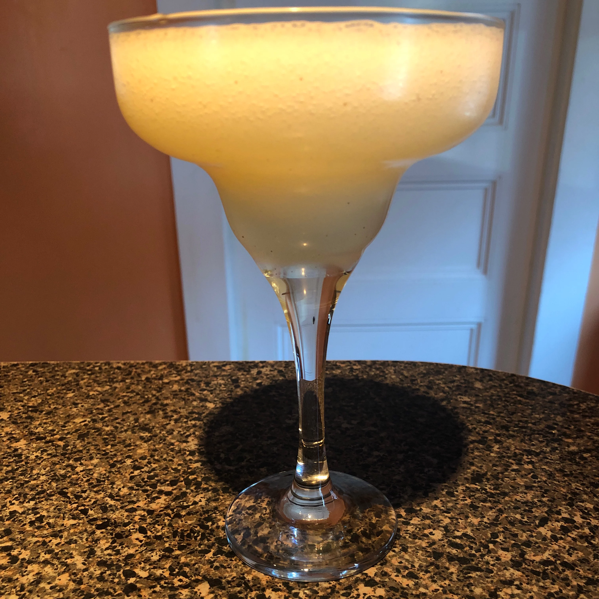

Margarita

Description
Tasty Margarita
Ingedients
- ½ fluid ounce Gran Gala Triple Orange Liqueur
- 2 fluid ounces Corazon Blanco Tequila
- 1 fluid ounce fresh lime juice
- 1 fluid ounce agave nectar or simple syrup
Steps
- Shake together all ingredients with ice and strain into a margarita glass.
- Optional: rub the cut side of a lime on the glass rim and dip it into salt; and add a lime wedge to the rim of the glass as a garnish.